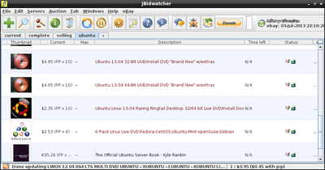
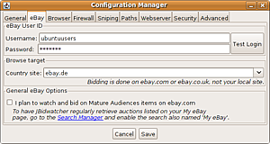

JBidwatcher
Dieser Artikel wurde für die folgenden Ubuntu-Versionen getestet:
Ubuntu 14.04 Trusty Tahr
Zum Verständnis dieses Artikels sind folgende Seiten hilfreich:
JBidwatcher  ist eine auf Java basierende Anwendung, um Auktionen bei eBay zu beobachten, Gebote abzugeben, in der letzten Sekunde zu bieten und um die eigenen Auktionen zu verfolgen. Internetverknüpfungen können per Drag&Drop aus dem Browser hinzugefügt werden und verschiedene Auktionen gleicher Art zu "Multisniping"-Gruppen zusammengefasst werden. D.h. sobald eine Auktion aus einer Gruppe gewonnen wurde, wird in weiteren Auktionen nicht mehr geboten.
ist eine auf Java basierende Anwendung, um Auktionen bei eBay zu beobachten, Gebote abzugeben, in der letzten Sekunde zu bieten und um die eigenen Auktionen zu verfolgen. Internetverknüpfungen können per Drag&Drop aus dem Browser hinzugefügt werden und verschiedene Auktionen gleicher Art zu "Multisniping"-Gruppen zusammengefasst werden. D.h. sobald eine Auktion aus einer Gruppe gewonnen wurde, wird in weiteren Auktionen nicht mehr geboten.
Voraussetzungen¶
Das Programm erfordert eine Java-Laufzeitumgebung (JRE), welche mindestens der Version 1.6 (Java 6) oder neuer entsprechen sollte.
Installation¶
 JBidwatcher ist nicht in den Paketquellen von Ubuntu enthalten. Möchte man JBidwatcher benutzen, muss man es manuell installieren.
Manuell¶
Das Programm kann direkt von der Projektseite  heruntergeladen werden. Die richtige Programm-Variante ist das Java-Archiv (.jar), auf der Homepage "Linux-Binary" genannt. Der Dateiname hat die Form JBidwatcher-VERSIONSNUMMER.jar, also zum Beispiel JBidwatcher-2.5.6.jar.
heruntergeladen werden. Die richtige Programm-Variante ist das Java-Archiv (.jar), auf der Homepage "Linux-Binary" genannt. Der Dateiname hat die Form JBidwatcher-VERSIONSNUMMER.jar, also zum Beispiel JBidwatcher-2.5.6.jar.
Hinweis!
Fremdsoftware kann das System gefährden.
Systemweite Installation¶
Programme, die an der Paketverwaltung vorbei installiert werden, können nach /opt/ kopiert werden, wenn sie allen Benutzern zur Verfügung stehen sollen. Daher legt man nun ein Verzeichnis für JBidwatcher an, am einfachsten in einem Terminal [1]:
sudo mkdir /opt/jbidwatcher
Anschließend sollten die .jar-Datei und das oben verwendete JBidwatcher-Symbol nach /opt/jbidwatcher/ kopiert werden. Hierfür werden Root-Rechte benötigt. Damit man das Programm bequem starten kann, fehlt ein kleines Startskript. Man erstellt daher mit einem Editor [2] mit Root-Rechten die Datei /usr/local/bin/jbidwatcher mit dem folgenden Inhalt:
#!/bin/bash java -jar /opt/jbidwatcher/JBidwatcher-VERSIONSNUMMER.jar
und macht diese ausführbar [3].
Aus einem Terminal heraus kann jetzt JBidwatcher mit dem Befehl
jbidwatcher
gestartet [4] werden.
Möchte man JBidwatcher aus dem Startmenü des Desktops starten, so muss man von Hand einen Eintrag erstellen [5]. In diesem Fall kann auch das Startskript entfallen. Um im Startmenü ein Logo anzuzeigen, muss man dieses manuell herunterladen und im Ordner /usr/share/pixmaps/ speichern. Hierzu werden Root-Rechte benötigt.
Die prinzipielle Vorgehensweise ist im Abschnitt Integration ins Startmenü beschrieben. Allerdings sollte der Programmstarter abweichend nach /usr/share/applications/jbidwatcher.desktop kopiert und die Installationspfade entsprechend angepasst werden.
Installation im Homeverzeichnis¶
Jbidwatcher kann auch ohne Root-Rechte im Homeverzeichnis installiert werden. Das Programm kann dann aber nur vom jeweiligen Benutzer verwendet werden. Man erstellt dazu einen Ordner JBidwatcher, entweder im Dateimanager oder auf der Kommandozeile:
mkdir ~/JBidwatcher
und kopiert die heruntergeladene JBidwatcher-Datei und das Logo als Bilddatei in den neuen Ordner.
Hinweis:
Im Folgenden wird angenommen, dass die Datei und das Logo in jbidwatcher.jar und jbidwatcher.png umbenannt wurden. Neue Programmversionen können auf diese Weise einfach installiert werden, ohne Skripte oder Starter ändern zu müssen. Die aktuelle Programmversion kann man sich von JBidwatcher unter "Help" - "About JBidwatcher" anzeigen lassen.
Jetzt kann man JBidwatcher mit folgendem Befehl starten:
java -jar ~/JBidwatcher/jbidwatcher.jar
Integration ins Startmenü¶
Um JBidwatcher ins Startmenü zu integrieren, muss man von Hand einen Eintrag erstellen[5]. Im Fall der Installation im Homeverzeichnis erstellt man dazu die Datei ~/.local/share/applications/jbidwatcher.desktop. Eine Beispieldatei sieht folgendermaßen aus:
[Desktop Entry] Type=Application Name=JBidwatcher Exec=java -jar /home/BENUTZERNAME/JBidwatcher/jbidwatcher.jar Icon=/home/BENUTZERNAME/JBidwatcher/jbidwatcher.png Terminal=false Categories=Network; StartupNotify=false
Je nach Desktop-Umgebung ist es unter Umständen noch erforderlich, die .desktop-Datei ausführbar[3] zu machen.

Konfiguration¶
Nach dem ersten Aufruf des Programms öffnet sich der "Configuration Manager", wo Basiseinstellungen vorgenommen werden können. Unter "eBay" werden neben dem Benutzernamen und dem Passwort die bevorzugte eBay-Seite hinterlegt. Hier können weitere Einstellungen, wie z.B. der zu verwendende Browser, vorgenommen werden. Die Einstellungen können jederzeit über "File -> Configure" bzw. Strg + C verändert werden.
Bedienung¶
Die Bedienung des Programms ist intuitiv zu erfassen - die wichtigsten Funktionen auf einen Blick:
| JBidwatcher | |
| Symbol | Beschreibung |
| Auktion hinzufügen - hier wird die Auktionsnummer benötigt | |
| Der Suchmanager wird gestartet | |
| Auktion starten | |
| Informationen zur Auktion abrufen | |
| Auktion aus Liste entfernen | |
| Auktionen aktualisieren | |
| Aktualisierung abbrechen | |
| Konfigurationsmenü aufrufen | |
| Das Forum von JBidwatcher aufsuchen | |
Problembehebung¶
Es passiert gelegentlich, dass JBidwatcher Auktionen nicht oder nicht korrekt einliest, z.B. "Sofortkauf" bei einer normalen Auktion anzeigt. Das liegt meist daran, dass bei eBay Abläufe geändert wurden, die JBidwatcher noch nicht berücksichtigt. Da der Entwickler Morgan Schweers nahezu die gesamte Arbeit allein macht, kann es einige Tage oder Wochen dauern, bis ein Update verfügbar ist und JBidwatcher wieder mit eBay Schritt hält.
Meist werden Vorab-Versionen mit entsprechenden Anpassungen etwas früher zum Download angeboten. Experimentierfreudige Naturen finden diese im Forum. Nach einer Testphase wird dann dann eine "offizielle" stabile Version auf der Website zum Download angeboten.
Als Alternative kann auch das Windows-Programm Biet-O Matic verwendet werden, das problemlos unter Wine läuft.
- Erstellt mit Inyoka
-
 2004 – 2017 ubuntuusers.de • Einige Rechte vorbehalten
2004 – 2017 ubuntuusers.de • Einige Rechte vorbehalten
Lizenz • Kontakt • Datenschutz • Impressum • Serverstatus -
Serverhousing gespendet von